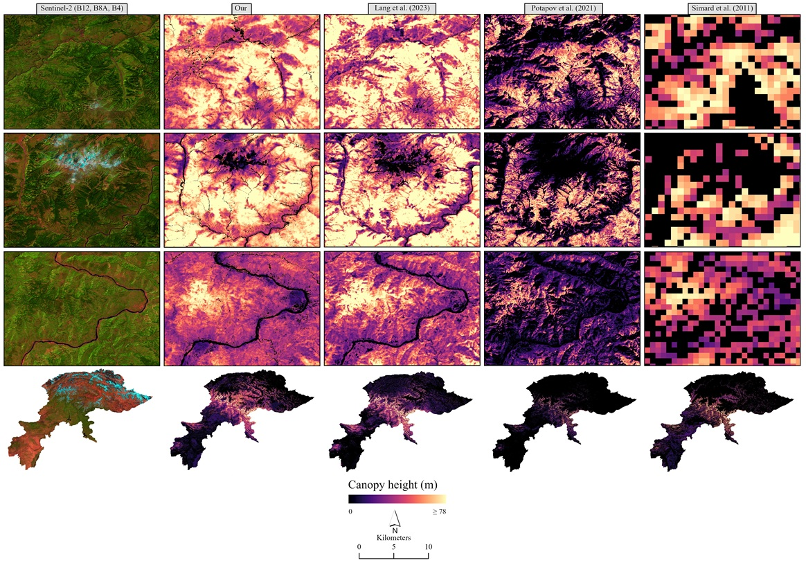

Dataset
WHiCH (Western Himalaya Canopy Height) Map 2020, Pakistan
Zenodo, 2025 · DOI: 10.5281/zenodo.18056032
Zenodo Awesome GEE Community Catalog GEE App Bibtex Paper
10 m canopy height map of Pakistan’s western Himalayas for 2020, produced by fusing GEDI LiDAR with Sentinel-2 imagery in a deep learning model.